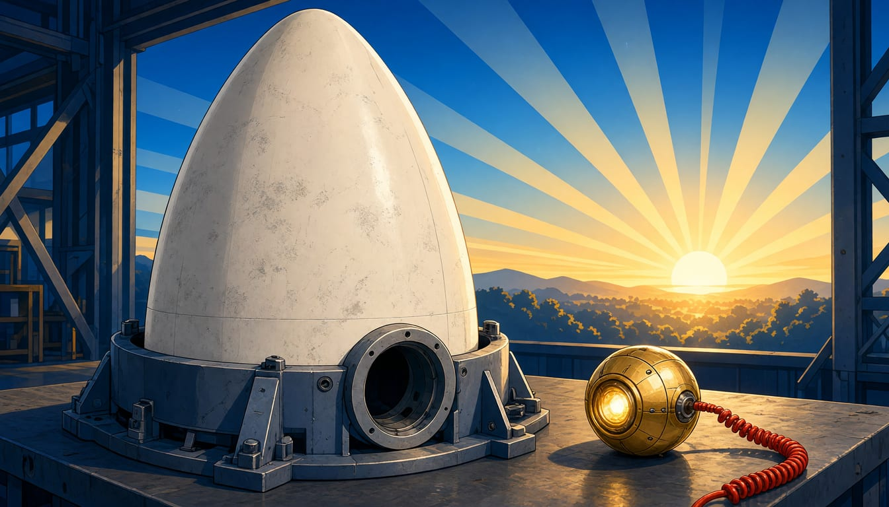

Opinion
The launcher is built. Ten governments must now buy it.
Ukraine's new interceptor waits on seekers, a data link and a command centre that European governments have yet to supply, while €90 billion in EU loans stands ready. Sign first, spend small, decide big in 2027.

The launcher is built. Hensoldt makes the radar, Norway's Kongsberg is developing the command centre, and ten governments, Ukraine among them, signed the declaration in Paris in July. In August, Denys Shtilierman, chief designer of the Ukrainian defence-tech company Fire Point, said the first FP-7.X interceptors could be ready by the end of 2026, on one condition. European governments and manufacturers must supply the technology still missing: seekers, a real-time data link, a command-and-control centre.
The ministries stall. They trust the Patriot, and they have reasons: the American system is proven, and the Future Combat Air System showed what a collapsed flagship costs a coalition. The Patriot is excellent, as Fire Point's own chief executive Iryna Terekh said, one of the best in the world, but it was never designed for the number of threats being faced now. The past year proved her point. Volodymyr Zelenskyy said Ukraine needs 300 Patriot interceptors for one winter. The United States and its allies fired hundreds against Iran, the arsenals strained, and US interceptors became harder to obtain. Bruegel's judgement is plain: buying more Patriots with EU money will not solve the structural supply problem. Shtilierman's one condition is exactly what the ministries have yet to meet. And the signatory governments keep relying on the American queue while Fire Point waits for that order.
What Fire Point needs is a signature, and the waiting turns into building.
The architecture is open. The source code and control protocols belong to the member countries, not to an outside supplier, and no third country holds remote access that can block the system, as Fire Point stated. In August, Davyd Aloian of Ukraine's National Security and Defence Council said that under this open architecture one country can choose a radar from Denmark's Weibel and another equipment from Sweden's Saab. The design authority and the upgrades stay inside Europe. Fire Point said in August it aimed to make 2,000 interceptors a year, at a price it targets at under €1 million each, which it says is four to six times cheaper than a Patriot.
Ten governments can fix this with one purchase. The money exists: the EU's loan for Ukraine of €90 billion, two-thirds of it for defence, to which British Prime Minister Keir Starmer confirmed in July the United Kingdom would join, making British companies eligible for contracts under the scheme. Part of this winter's spending through that loan should go to what Fire Point still lacks. The attempt is one step. The big order is another. Ministries may hold back with their usual case: never commit before a system proves itself. Staging answers them. Staged this way, each step stays cheap to take and easy to stop. Ukraine's own part is already done. Sign first, spend small, decide big in 2027. And you: write to your defence ministry this winter, and ask where its order is.